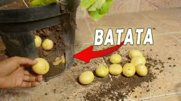

Conheça as iniciativas da Raiz Viva e descubra como participar!
A Raiz Viva acredita que pequenas ações locais podem gerar grandes transformações. Nossos projetos unem sustentabilidade, educação ambiental e inclusão social, promovendo o cuidado com a terra e com as pessoas.
🌱 Horta Comunitária

O projeto “Horta Comunitária” oferece oficinas gratuitas sobre cultivo sustentável de alimentos. O objetivo é incentivar o consumo consciente e a alimentação saudável dentro das comunidades urbanas. As hortas são cuidadas de forma colaborativa, fortalecendo o vínculo entre os moradores. Além disso, proporciona a experiência de cultivar e restabelecer a conexão com a natrureza.
🍃 Compostagem Coletiva

Esse projeto ensina moradores e escolas a reduzir o lixo e reaproveitar recursos, transformando restos de alimentos em fertilizante para as hortas locais. Transformamos resíduos orgânicos em adubo natural! Ao invés de descartar restos de alimentos, cascas e podas como lixo, nós transformamos os resíduos orgânicos em um recurso valioso para nutrir a própria comunidade.
🌾 Educação Verde
 (Novo)
(Novo)
Oficinas, palestras e visitas guiadas para escolas e grupos comunitários sobre preservação ambiental e reciclagem. O programa estimula o aprendizado prático e o respeito à natureza desde cedo.
🪴 Técnicas de Cultivo

Descubra como transformar varandas, sacadas e pequenos quintais em mini-hortas produtivas. Este projeto oferece guias práticos e workshops sobre plantio vertical, cultivo em vasos e manejo eficiente de recursos hídricos para ambientes urbanos e compactos.
Nossa Galeria de Imagens

💚 Como Doar
Sua contribuição ajuda a manter nossos projetos ativos e acessíveis para toda a comunidade. Você pode doar mudas, sementes, ferramentas ou recursos financeiros. Toda doação é revertida em ações diretas para o meio ambiente.
Fale Conosco
Endereço: Rua das Palmeiras, 123
Bairro Verde, Cidade Esperança
Email: contato@raizviva.org
Telefone: (11) 98765-4321